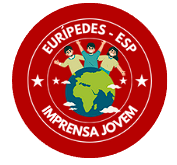

Citações de Entrevistas
"Aumente a credibilidade do seu produto e serviço inserindo depoimentos dos clientes. Todo mundo adora recomendações, por isso, o depoimento de outras pessoas que já o experimentaram é inestimável." "Aumente a credibilidade do seu produto e serviço inserindo depoimentos dos clientes. Todo mundo adora recomendações, por isso, o depoimento de outras pessoas que já o experimentaram é inestimável."
- José Matos
"Aumente a credibilidade do seu produto e serviço inserindo depoimentos dos clientes. As pessoas adoram recomendações, então o depoimento de outros clientes é inestimável. Envie mais depoimentos aqui!"
- Larissa Andrade
"Aumente a credibilidade do seu produto e serviço inserindo depoimentos dos clientes. As pessoas adoram recomendações, então o depoimento de outros clientes é inestimável. Aumente a credibilidade do seu produto e serviço inserindo depoimentos dos seus clientes. "
- Alberte Lemos


Visita ou Campanha?
josé Afonso
Após visitar a escola Euripedes Simôes de Paula no dia 08/03, para dar palestra sobre as mulheres no governo e no poder político, a deputada federal Tabata Amaral dividiu opiniões.
No dia 08/03, a escola recebeu a deputada federal Tabata Amaral para uma palestra sobre mulheres na política e sua carreira. Antes da palestra, ela participou de uma entrevista com a Imprensa Jovem da escola. Durante a palestra, Tabata respondeu apenas quatro perguntas dos alunos, o que deixou muitos intrigados. Ela iniciou perguntando sobre os sonhos dos alunos, buscando inspirar o interesse pela política. Sua presença gerou expectativa e interesse, oferecendo aos alunos insights sobre participação cívica e políticas públicas. A visita reforçou a importância do engajamento político dos jovens e promoveu o diálogo entre políticos e estudantes, inspirando-os a serem agentes de mudança em suas comunidades. Em suma, a palestra de Tabata Amaral foi uma oportunidade enriquecedora para os alunos aprenderem, refletirem e se inspirarem na busca por um futuro mais justo e inclusivo.
Seu discurso seguiu explanando os desafios que ela enfrentou na política, em como os professores a ajudou a entrar em Harvard, problemas familiares e sobre a saúde mental. O que era pra ser uma palestra sobre o dia das mulheres e a importância das mesmas em cargos políticos, sobretudo mulheres periféricas por se tratar de uma escola pública de região pobre, deu a impressão a muitos alunos em ser uma promoção individual, ou campanha política. Sem contar nos desvios de respostas objetivas quando abriu o tempo para os alunos perguntarem, além de serem poucas perguntas, foram respondidas de formas indiretas, desviando do que foi questionado em si.
No entanto, o discurso feito e o clímax de sua superação e dificuldades se deu no encontro com a vivência da maioria dos alunos, o que pode ter motivado muitos a não desistirem dos seus objetivos e a terem esperança de alcançar cargos e lugares que nunca imaginariam, embora tenhamos a consciência de que as oportunidades para estudantes periféricos, sobretudo mulheres e mulheres negras, são muito baixas.
Assista a entrevista
clicando aqui
Entrevista completa com a Deputada Tabata Amaral, exclusiva e disponivel apenas nos meios comunicativos da imprensa jovem. Compartilhe com seus conhecidos e deixe sua opinião!
A entrevista irá ficar disponivel no nosso site e nos meios de comunicação até dia xx/xx. Não perca!